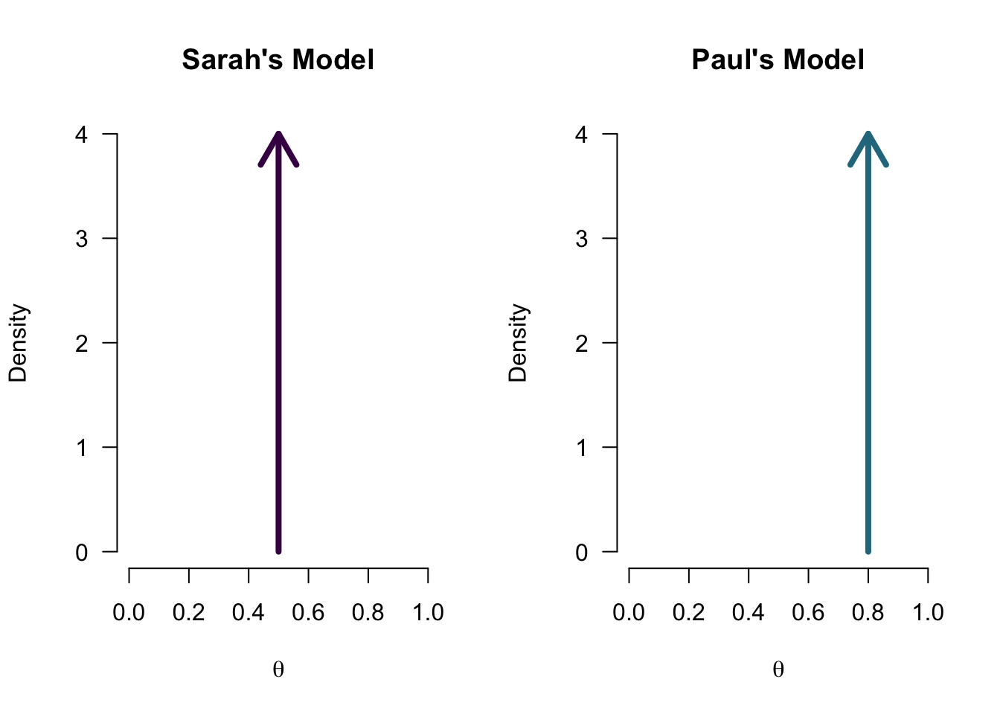
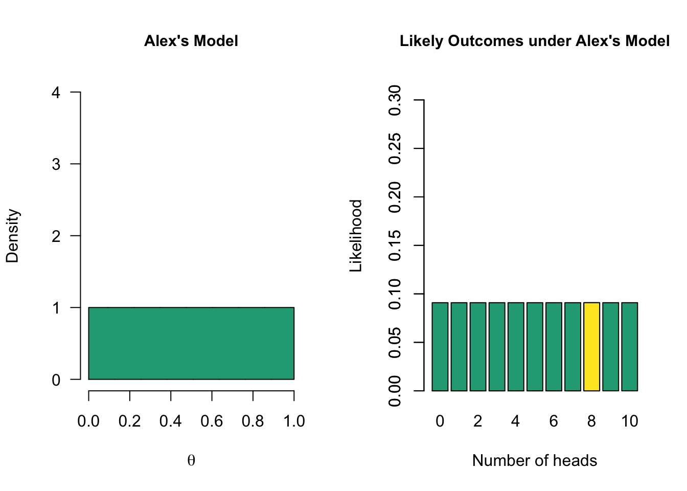
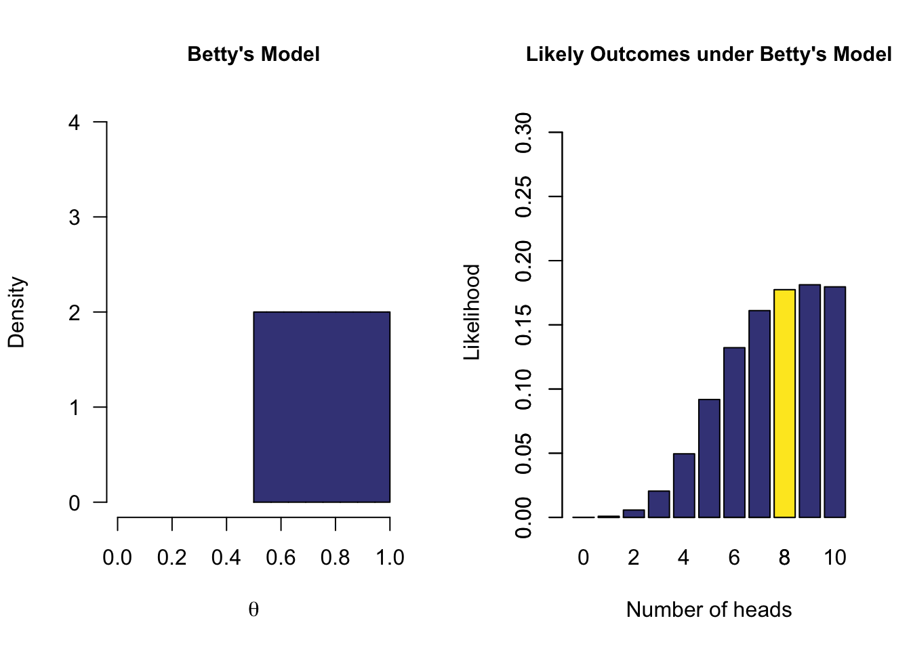
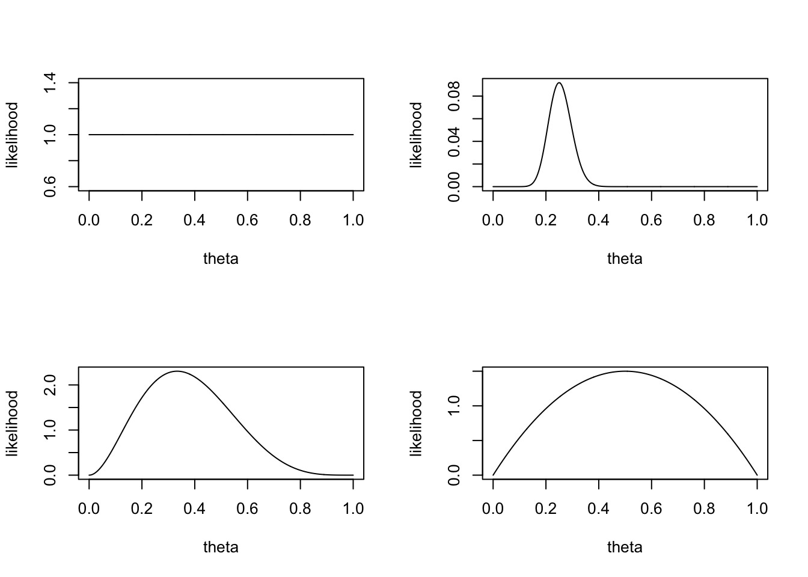

Bayesian parameter estimation
Updating belief
Posterior \(\propto\) Likelihood \(\times\) Prior
What is a model?
What does a model predict?

Model with multiple values

One-sided model

Prior distribution
You have assigned a prior probability distribution to the parameter \(\theta\).
This is your prior
Now we normally do not draw our priors, but we could.
Priors
We can choose a flat prior, or a beta distributed prior with different parameter values \(a\) and \(b\).
theta = seq(0,1, .001)
layout(matrix(1:4,2,2))
plot(theta, dunif(theta), type="l", ylab = "likelihood")
plot(theta, dbeta(theta, 3, 5), type="l", ylab = "likelihood")
plot(theta, dbinom(25, 100, theta), type="l", ylab = "likelihood")
plot(theta, dbeta(theta, 2, 2), type="l", ylab = "likelihood")
Choose prior
Binomial distribution
\(\theta^k (1-\theta)^{n-k} \\ \theta^{25} (1-\theta)^{100-25}\)
Now what is the data saying
My ten tosses
\(\begin{aligned} k &= 2 \\ n &= 10 \end{aligned}\)
k = 2
n = 10Likelihood
What is the most likely parameter value \(\theta\) assuming the data to be true:
\(\theta = \frac{2}{10} = 0.2\)
theta.given.data = k/n
theta.given.data[1] 0.2Likelihood function
How likely is 2 out of 10 for all possible \(\theta\) values?
\(\theta^k (1-\theta)^{n-k}\)
thetas = seq(0, 1, .01)
likelihood = dbinom(k, n, thetas)
plot(thetas, dbinom(k, n, thetas),
main = "Likelihood function",
type='l',
ylab = "Likelihood",
las = 1)
abline(v=theta.given.data, lty='dashed')

Posterior
Now we can update our belief about the possible values of theta based on the data (the likelihood function) we found. For this we use Bayes rule.
\(\begin{aligned} {Posterior} &\propto {Likelihood} \times {Prior} \\ \theta^{27}(1-\theta)^{83} &= \theta^{2} (1-\theta)^{10-2} \times \theta^{25} (1-\theta)^{100-25} \end{aligned}\)
Visual

Theta all mighty
The true value of \(theta\) for our binomial distribution.
\(\Huge \theta = .68\)
The data driver!
Animation code
set.seed(25)
## Run multiple samples with our real theta of .68 as our driving force.
real.theta = .68
old.k = 27
old.n = 83
for(i in 1:20) {
# Choose a random sample size between 10 and 100
sample.size.n = sample(30:100, 1)
# Sample number of heads based on sample size and fixed real parameter value
number.of.heads.k = rbinom(1, sample.size.n, real.theta)
# sample.size.n
# number.of.heads.k
new.k = old.k + number.of.heads.k
new.n = old.n + sample.size.n
layout(matrix(1:3,1,3))
plot(theta, dbinom(new.k, new.n, theta), type="l", ylab = "likelihood", main = "Posterior")
plot(theta, dbinom(number.of.heads.k, sample.size.n, theta), type="l", ylab = "likelihood", main = "Likelihood")
plot(theta, dbinom(old.k, old.n, theta), type="l", ylab = "likelihood", main = "Prior")
old.k = new.k
old.n = new.n
}Animation

Take home message
- Bayesians quantify uncertainty through distributions.
- The more peaked the distribution, the lower the uncertainty.
- Incoming information continually updates our knowledge; today’s posterior is tomorrow’s prior.